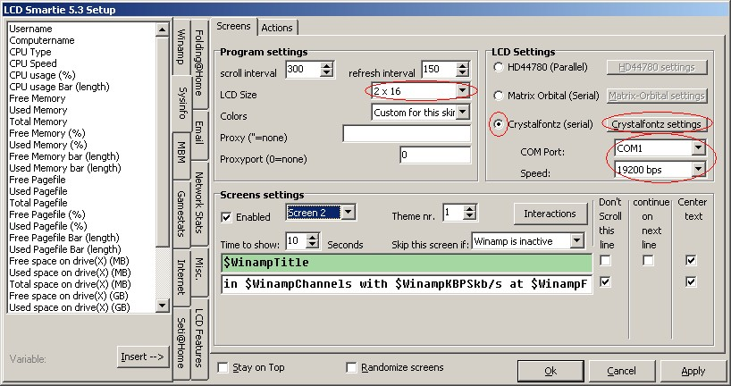
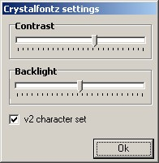

Crystalfontz serial display configuration
Select setup:

Setup screen will appear:
The important settings are highligthed in red.
- Select "Crystalfontz (serial)".
- Set the correct LCD Size for your display.
- Configure the COM port that your display is attached to. If your display is an USB display, then choose the virtual COM port that has been assigned to your display.
- Configure the baud rate.
- 633: size=2x16, baud=19200
- 631: size=2x20, baud=115200
- 632: size=2x16, baud=19200
- 634: size=4x20, baud=19200
Press "Crystalfontz settings"

Adjust the contrast and backlight to suit your conditions
Select which character set you have. You can work out if you have the correct character set selected when the @ symbol appears correctly.
Below are typical values:
- 633: v1
- 631: v2
- 632: v2
- 634: v2